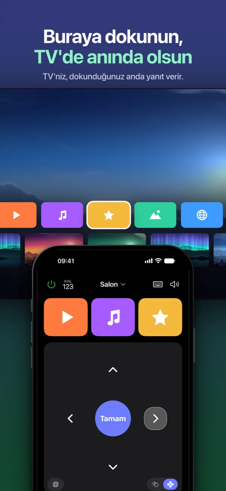
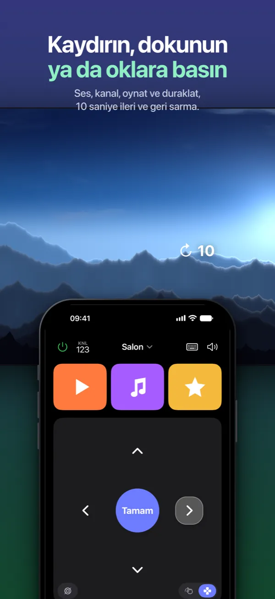
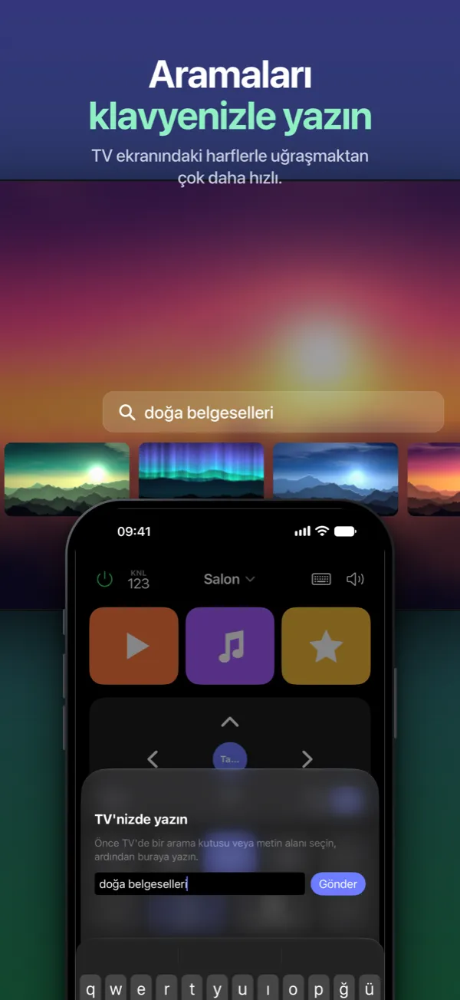
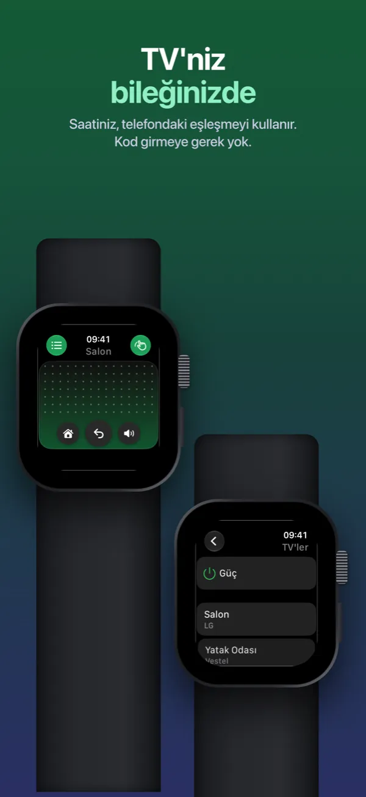
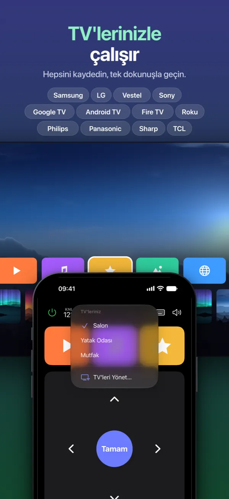

Wi-Fi TV kumandası
Universal TV kumandası iPhone, iPad, Apple Watch ve Mac için
Cingle Remote, iPhone'unuzu, iPad'inizi, Apple Watch'unuzu ve Mac'inizi ev Wi-Fi'ınız üzerinden TV'nizin tek kumandasına dönüştürür. Pil değiştirmek yok, doğrultmak yok, reklam hiç yok.
Evinizdeki TV ile çalışır
Cingle, TV'nizi Wi-Fi ağınızda kendisi bulur; isterseniz IP adresiyle de ekleyebilirsiniz.
Diğer markaların sayfaları İngilizce. Apple TV HD ve Apple TV 4K ile Google TV, Android TV, Fire TV veya Roku kullanan Hisense, Xiaomi, Toshiba ve pek çok markanın TV'si de desteklenir. Tam listeye bakın.
Tüm cihazlarınızda tek kumanda
TV'yi iPhone'unuzda eşleştirin, Apple Watch'unuz da hazır olsun; kod girmeniz gerekmez. iPad'iniz ve Mac'iniz aynı TV'leri bulur ve tek bir Premium+ satın alımı, aynı Apple Hesabı ile hepsinde geçerlidir.
iPhone ve iPad
- Geniş bir alanda kaydırın ve dokunun ya da oklar ve OK'u kullanın
- Ses, sessiz, kanallar, rakam tuşları, oynat/duraklat ve 10 saniye atlama
- iPhone'unuzun ses düğmeleri TV'nin sesini değiştirir
- TV'nizin uygulamalarını tek dokunuşla açın
- Klavyenizle arama yazın (LG, Samsung, Roku, Google TV, Fire TV, Apple TV ve bazı diğerleri)
- LG webOS TV'lerde imleç için izleme dörtgeni ve Jiroskopik İmleç (Premium+)
- Ana ekranda kumanda widget'ı, Denetim Merkezi'nde TV Tuşu ve Siri ile kontrol (Premium+)
Apple Watch
TV'nizi bileğinizden kontrol edin: gezinmek için kaydırın ve dokunun; Ana ekran, Geri, Sessiz ve Güç düğmeleri ile ses için Digital Crown elinizin altında. Bileğinize bir dokunuş, TV hazır olunca haber verir.
iPhone'unuzda Cingle Remote yüklü olmalıdır; Roku dışındaki TV'lerde iPhone'unuz yakında olmalıdır. watchOS 10 veya üstüyle çalışır.
Mac
Ok tuşlarıyla gezinin, Return ile seçin, Boşluk ile oynatın veya duraklatın, Delete ile geri gidin, rakamlarla numara girin; "Kumanda" menüsünde ses, kanallar, yazma ve diğerleri klavye kısayollarıyla yer alır.
LG webOS TV'lerde fareniz veya izleme dörtgeniz imleci hareket ettirir. macOS 15 veya üstüyle çalışır.





Reklam yok. Takip yok.
Cingle reklam göstermez, analiz veya takip kullanmaz. TV'nizle Wi-Fi üzerinden doğrudan konuşur ve kaydettikleri cihazlarınızda kalır. Hesap açmanız gerekmez.
Premium+
Premium+ olmadan Cingle, tüm temel kumanda işlevleriyle bir TV'yi kaydeder. Premium+ birden fazla TV, ilk iki haftasından sonra Apple Watch uygulaması, Mac'te daha büyük kumanda, Jiroskopik İmleç, Siri, widget ve TV Tuşu ekler. Aynı Apple Hesabı ile tüm cihazlarınızda ve Aile Paylaşımı ile çalışır.
Cingle'ın desteklediği tüm TV'ler
Cingle her TV türüyle kendi dilinde, ev Wi-Fi'ınız üzerinden konuşur.
- LG webOS TV'ler ve 2012–2013 LG NetCast TV'ler
- 2016 ve sonrası Samsung akıllı TV'ler ve 2010–2015 arasının birçok modeli
- Roku TV'ler ve oynatıcılar
- Google TV ve Android TV; Chromecast with Google TV, Google TV Streamer, NVIDIA Shield ve Xiaomi TV Box dahil
- tvOS 15 veya üstü yüklü Apple TV HD ve Apple TV 4K
- Amazon Fire TV Stick, Cube ve Fire TV'ler; ses düzeyi kendi kumandalarıyla ayarlanır
- Titan OS veya Saphi sistemli Philips TV'ler ve yaklaşık 2011 sonrası eski modeller
- Yaklaşık 2012–2024 arası Panasonic Viera TV'ler
- Yaklaşık 2013 ve sonrası Sony Bravia TV'ler
- IP kontrollü, yaklaşık 2010–2016 arası Sharp AQUOS TV'ler
- TCL'nin kendi sistemini kullanan, yaklaşık 2014–2019 arası TCL ve Thomson TV'ler
- Vestel'in kendi akıllı sistemini kullanan TV'ler: Vestel, Regal, Toshiba, Hitachi, JVC, Sharp, Telefunken, Finlux, Medion, Bush, Alba, ProCaster ve Celcus
Google TV, Android TV, Fire TV veya Roku kullanan Sony, Philips, Panasonic, Sharp, Toshiba, TCL, Hisense, Xiaomi, Arçelik, Beko, Grundig ve pek çok markanın TV'si de buna dahildir.
Hisense'in VIDAA sistemli TV'leri ile kendi sistemini kullanan Arçelik, Beko ve Grundig TV'ler desteklenmiyor.
TV'nizin, iPhone'unuz, iPad'iniz veya Mac'inizle aynı Wi-Fi ağında olması gerekir.
Cingle Remote'u edinin
iPhone'unuz, iPad'iniz, Apple Watch'unuz ve Mac'iniz TV'niz için hazır. Hiç reklam yok.
iOS 18, iPadOS 18, watchOS 10 ve macOS 15 veya üstüyle çalışır.
Sorunuz mu var? Destek sayfası sık sorulanları yanıtlıyor ve geliştiriciye nasıl ulaşacağınızı anlatıyor.